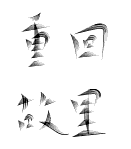

1933年
1933年，日本军队入侵山海关，危急的局势下学校不得不考虑搬迁。1935应师生提出的主张，学校搬迁至上海。在国民党与日寇媾和后才搬回。
1937年，日军全面侵华，校园再度被占领，在战争、国民党腐败和经费拮据的压力下学校迁至湖南，
12月15日，交通大学唐山工程学院在湘潭举行了开学典礼。
1938年10月25日，日军占领武汉。之后又因为日军进攻长沙，师生历经坎坷，穿越战火，最终于
1939年1月28日到达平越，成功复课。
1944年11月，又起波澜。日本侵略者于4月中旬发动了豫湘桂战役。师生为了躲避战火，被迫逃亡重庆，最终在璧山丁家坳正式开学复课。直至抗日战争胜利后，学校搬回唐山。

为了适应国家对发展教育的布局，在院系调整中，将我校与铁道工程无关的或关系较少的系科，都调到了其他院校。
一、将冶金系调至北京钢铁学院（今北京科技大学）。冶金系除留下教授、助教各1名外，其余的以系主任张文奇教授为首的13名教师（教授4人、副教授1人、助教7人、体育组助教1人）与学生73名全部被调至钢院，成为建立钢院的骨干力量，张文奇出任该院院长。
二、采矿系被调至中国矿业学院（今中国矿业大学），以系主任何杰教授为首的采矿系部分师生（其中教授5名、副教授1名、助教1名、政治课助教1名、学生92人），被调往矿院，成为建立北京矿业学院的基础力量，何杰先后出任该院教务长和副院长。
三、采矿系地质组的师生被调至北京地质学院（今中国地质大学），袁见齐教授等师生（其中教授3名、助教3名、学生2名）被调往地院，成为筹备北京地质学院的重要力量，袁见齐先后任该院系主任、副院长。仅因我院土木专业尚有工程地质课程，地质组留下教授与助教各1名。
四、除保留应用化学组外，我校化学工程系被调至天津大学。以系主任余国琮教授为首的教师14名（其中教授3名、副教授4名、讲师1名、助教6名）、学生54人，被调往天津大学。
五、停办材料系。
六、电机系电讯组被调至哈尔滨铁道学院，电讯组教师4名（教授2名、副教授1名、助教1名）及学生14名以及电讯专修科学生2名，被调往哈尔滨铁道学院。
七、土木系水利组教授黄万里及学生9人被调至清华大学。
在抗美援朝运动中，我校师生作出的一个特殊贡献是四次组织工程队、三次入朝、在国内和朝鲜参与修建了5座军用机场。我校是全国高校唯一的组成工程队、修建飞机场，为抗美援朝作出贡献的高校。在前后两年半的时间里，由于有一批师生直接战斗在朝鲜前线，使整个唐院沉浸在爱国主义和国际主义热潮中，成为推动学校各项工作发展并取得重大成就的强大动力。
文革期间，学校由唐山迁往峨眉，从城市迁到乡村，形成了强烈的反差。由于种种困难，使得学校人才流失严重。招生质量显著下降。学校的师资队伍元气大伤，教学质量下降，科研力量减弱，招生质量显著下降。种情况传到了海外，许多老校友瞠目结舌，不相信这是真事。一所在历史上曾经扬名中外的唐山交大，怎么会丧失了在全国高校中领先的位置。1979年3月13日，校党委利用十一届三中全提出了关于校址问题的报告.1984年4月3日，四川省人民政府同意西南交通大学在成都建总校,最终于同年10月，学校总校定址九里堤，交大的历史进入了新的篇章。在新局面中，我校积极，创办新专业，回复了许多被取消的学科。我校从院系调整后为铁路服务、学科单一、专业面狭窄的专门性学校积极向社会主义综合性大学改革，使学校学科设置与社会经济发展相适应，同时也与国际高等教育向综合性方向发展的趋势相适应。